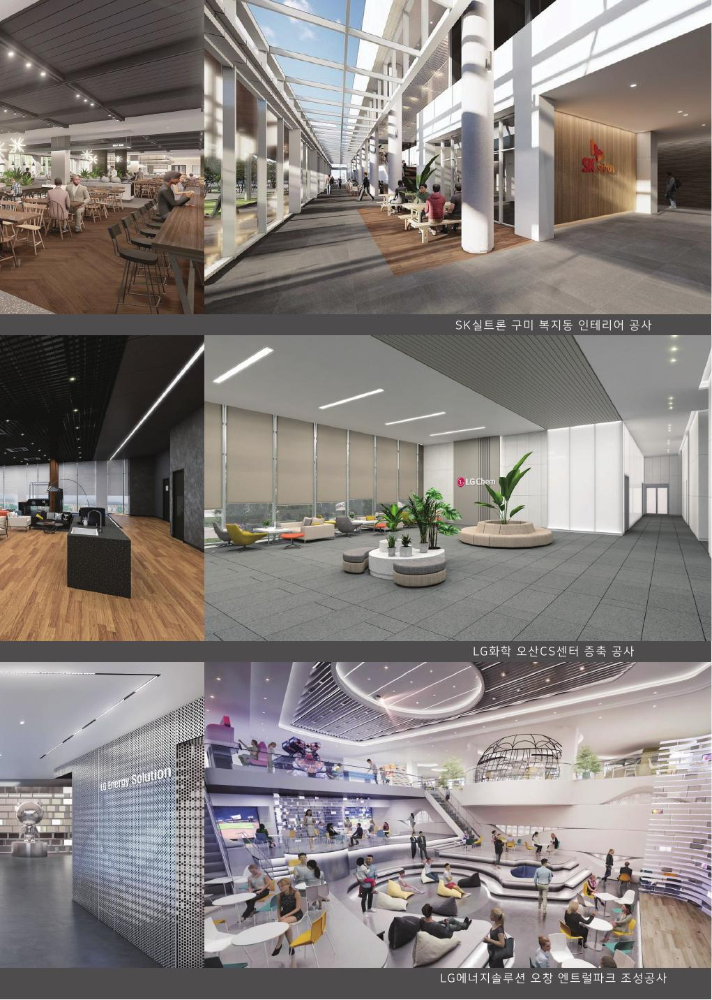
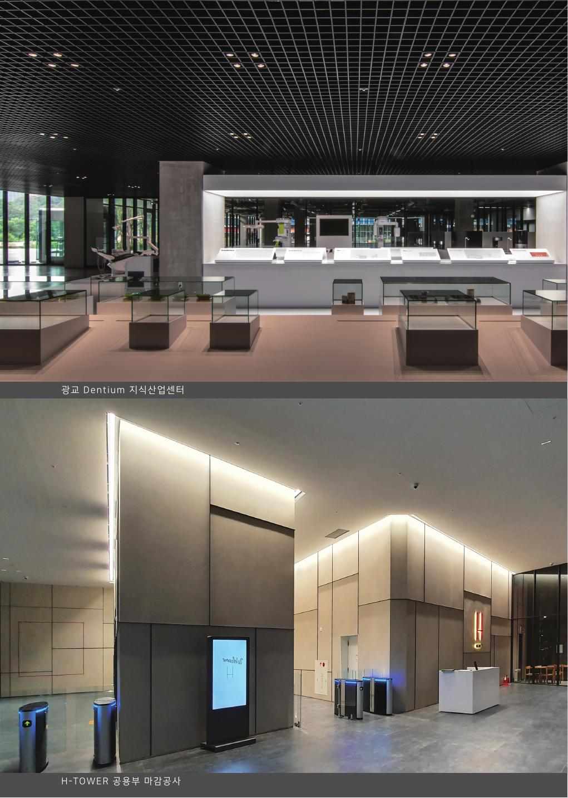
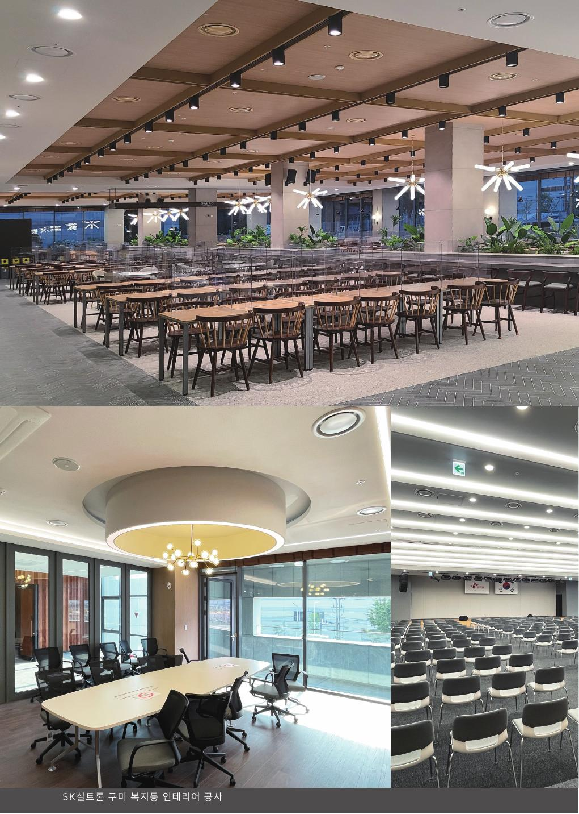
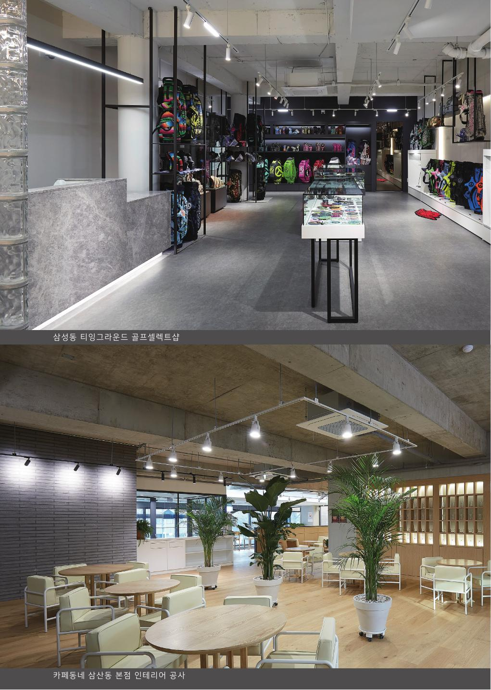

SPACE & DESIGN
Interior · Design · Construction · Material
공간 설계와 인테리어, 시공, 건축자재 분야의 실무 경험SPACE + URBAN
더 나은 도시라이프를 위한 공간
WE DESIGN SPACE. WE RESEARCH CITIES.
SPACE URBAN WORKS는 공간기획·디자인·시공의 경험과 도시계획·정책연구·개발컨설팅의 전문성을 결합한 공간·도시 전문기업입니다.
공간을 실제로 구현하는 실행력과 도시를 객관적으로 분석하는 연구 역량을 하나의 체계로 연결합니다.
TWO EXPERTISE. ONE VISION.
Interior · Design · Construction · Material
공간 설계와 인테리어, 시공, 건축자재 분야의 실무 경험Urban Planning · Research · Analysis · Consulting
도시계획, 도시재생, 주택·부동산, 지역개발, 정책·공간분석 역량두 개의 전문성을 하나의 프로젝트 안에서 연결합니다.
공간기획 · 인테리어 · 설계
내·외장 디자인 · 시공 · 공사관리
건축·인테리어 자재 · 수출입
도시계획 · 지역개발 · 도시재생 · 정책연구
부동산개발 · 사업기획 · 사업성·타당성 분석
통계 · GIS · 공간분석 · 수요분석
전신 조직의 수행실적은 Legacy Project로 구분해 소개합니다.

Interior · Space

Exhibition · Interior

Interior

Interior · Design
Urban Policy · Research
Housing · Policy
Safety · Data Analysis
RESEARCH FOR BETTER CITIES.
도시는 인간의 삶을 담는 그릇입니다. 도시공간을 객관적으로 조사·분석하고, 사람의 삶을 더 나아지게 하는 정책과 공간전략을 제안합니다.
도시계획 · 도시정책
도시·농촌재생 · 지역활성화
주택정책 · 주거복지 · 부동산
지역개발 · 개발사업 · 타당성
지역안전 · GIS · 공간빅데이터
공간과 도시의 서로 다른 전문성이 하나의 조직 안에서 협업합니다.
대표 / Urban Planning · Research · Development
이사 · 등기이사
경영지원 · 총무 · 인사
공간기획실장
Urban Planning · Research · Data Analysis
기존 유알공간도시연구소의 최근 수행 소식을 통합합니다.
한국농촌경제연구원
행정안전부
서울시의회
경기주택도시공사
CONTACT
공간기획 · 인테리어 · 개발 · 도시연구 · 컨설팅 프로젝트를 함께 이야기해주세요.
Space Planning · Interior · Development · Urban Research · Consulting